측량및지형공간정보기사 (2017-05-07 기출문제)
1과목: 측지학 및 위성측위시스템
1. 지구자기의 변화에 해당되지 않는 것은?
- 일변화
- 부게이상
- 영년변화
- 자기폭풍
(정답률: 72%)

2. GNSS 관측 도중 장애물 등으로 인하여 GNSS 신호의 수신이 일시적으로 단절되는 현상은?
- 사이클 슬립(cycle slip)
- SA(Selective Availability)
- AS(Anti Spoofing)
- 모호 정수(Ambiguity)
(정답률: 83%)
3. RINEX 형식이 포함할 수 있는 내용으로 거리가 먼 것은?
- GPS 위성의 C/A코드 의사거리
- GLONASS 위성의 항법 메시지
- GEO(Geostationary) 위성의 항법 메시지
- IKONOS 위성의 항법 메시지
(정답률: 68%)
4. 다음의 설명 중 옳지 않은 것은?
- 천체의 고도, 방위각 및 시각을 관측하여 미지점의 경위도 및 방위각을 결정하는 것을 천문측량이라 한다.
- 측지학적 3차원 위치결정이란 경도, 위도 및 높이를 산정하여 측지학적 좌표계를 결정하는 것이다.
- 지상으로부터 발사 또는 방사된 전자파를 인공위성으로 탐지하여 해석함으로써 지구자원 및 환경을 해결할 수 있는 것을 GNSS측량이라 한다.
- 지구곡률을 고려한 반지름 11km 이상인 지역의 측량에는 측지학의 지식을 필요로 한다.
(정답률: 65%)
5. GNSS 단독측위의 정확도에 영향을 미치는 요소가 아닌 것은?
- 위성 궤도정보의 정확성
- 관측 위성의 배치
- 전리층과 대류권의 영향
- 위성의 의사 잡음 부호
(정답률: 65%)
6. 측지선에 대한 설명으로 옳은 것은?
- 자오선과 항상 일정한 방위각을 갖는 지표상의 선
- 지구면(곡면)상의 두 점을 지나는 최단거리인 곡선
- 지구중심을 포함하는 임의의 평면과 지평선의 교선
- 적도와 나란한 평면과 지표면의 교선
(정답률: 68%)
7. 지자기 측정에 대한 설명 중 옳지 않은 것은?
- 지자기는 위치에 따라 그 방향과 크기가 다르다.
- 지자기 방향과 자오선이 이루는 각을 편각이라 한다.
- 지자기 방향과 수평면이 이루는 각을 복각이라 한다.
- 지자기의 자오선 방향 강도를 수직분력, 묘유선 방향 강도를 수평분력이라고 한다.
(정답률: 54%)
8. GNSS에 의한 위치결정 시 사용되는 위성 관측법은?
- 전파 관측법
- 카메라 관측법
- 음파 관측법
- 레이저 관측법
(정답률: 75%)
9. 다중경로(멀티패스)오차를 줄일 수 있는 방법으로 적합하지 않은 것은?
- 높은 고도로부터의 위성의 신호를 수신한다.
- 안테나로 들어오는 위성신호의 앙각(mask angle)을 낮춘다.
- 안테나의 설치환경(위치)을 잘 선택한다.
- Choke ring 안테나와 같이 ground plane이 장착된 안테나를 사용한다.
(정답률: 66%)
10. 중력측정에 대한 설명으로 옳은 것은?
- 측정중력을 평균 해수면에서의 중력값으로 보정해야 한다.
- 측정중력을 위도에 따른 표면장력으로 환산하여야 한다.
- 측정중력을 보정할 필요 없이 그대로 사용한다.
- 중력측정 시 관측시간을 기록할 필요는 없다.
(정답률: 67%)
11. 위성 측량에서 위성의 케플러 궤도요소의 개수는?
- 3개
- 4개
- 5개
- 6개
(정답률: 59%)
12. 신속정지측위(rapid static positioning)에 대한 설명으로 옳은 것은?
- 신속하게 이동하며 측위하는 기법을 말한다.
- 수신기를 자동차에 탑재하여 이동하며 측위하는 것을 말한다.
- 정적 상대측위 기법의 일종이다.
- 일반적으로 단독측위 기법을 기반으로 한다.
(정답률: 60%)
13. 우리나라 지도제작을 위해 사용하는 횡축메르카토르(TM) 도법에서 채택하고 있는 각 좌표계에 대한 좌표원점에서의 축척계수는?
- 0.9996
- 0.9999
- 1.0000
- 1.00⑤
(정답률: 60%)
14. 중력이상에 대한 설명으로 옳지 않은 것은?
- 중력이상이란 실제 관측 중력값에서 표준중력식에 의해 계산한 중력값을 뺀 것이다.
- 지오이드의 요철, 지하구조의 결정 등에 이용된다.
- 일반적으로 실측 중력값과 계산식에 의한 이론 중력값은 일치하지 않는다.
- 중력이상이 (+)이면 그 부근에 밀도가 작고 가벼운 물질이 존재한다.
(정답률: 83%)
15. 한 변의 길이가 10km인 구면 정삼각형에 대한 구과량은? (단, 구의 반지름은 6370km로 가정)
- 0.1″
- 0.2″
- 1.0″
- 2.0″
(정답률: 54%)
16. 다음 중 DGPS에 의해서 보정되지 않는 오차는?
- 전리층 지연 오차
- 위성시계오차
- 사이클 슬립
- 위성궤도오차
(정답률: 69%)
17. 위도 38°, 경도 127°인 지점의 묘유선의 곡률반지름(N)이 2300km, 타원체고(h)가 130m 이었다. 이 지점의 3차원 직각좌표중 Y 좌표값은 약 얼마인가?
- 1447549m
- 2447549m
- 3447549m
- 4447549m
(정답률: 51%)
18. 지구의 곡률로부터 생기는 길이의 오차를 1/2000000까지 허용할 때, 평면을 간주할 수 있는 범위의 반지름은? (단, 지구의 곡률 반지름은 6370km로 한다.)
- 22.0km
- 15.0km
- 10.2km
- 7.8km
(정답률: 55%)
19. GPS에서 사용하고 있는 좌표계는?
- NDA84
- PZ30
- WGS84
- BESSEL
(정답률: 80%)
20. UTM좌표에 대한 설명이 틀린 것은?
- 지구전체를 경도6°씩 60개의 구역으로 나누고 각 종대의 중앙자오선과 적도의 교점을 원점으로 한다.
- 원통도법인 횡축메르카토르(TM)투영법으로 등각투영 한다.
- 종대에서 위도는 남·북위 70°까지만 포함시키며 다시 7°간격으로 20구역으로 나눈다.
- 좌표의 표시는 중앙자오선과 적도를 종축과 횡축으로 정하여 미터(m)로 표기한다.
(정답률: 77%)
2과목: 응용측량
21. 터널 내의 좌표 A(1478m, 920m), B(2048m, 340m), 높이 A(96.56m), B(151.46m)인 A, B점을 연결하는 터널을 연결할 때, 이 터널의 경사거리는?
- 518m
- 651m
- 815m
- 855m
(정답률: 58%)
22. 단면에 의한 체적 계산 방법에 대한 설명으로 틀린 것은?
- 양단면평균법은 간편하기 때문에 실제 토공량 산정에 자주 이용되고 있다.
- 중앙단면법은 횡단면의 간격이 불규칙하고 단면적의 변화가 크지 않은 경우 유리하다.
- 각주공식에 의한 체적산정은 참값에 가장 가까운 값을 나타낸다.
- 일반적으로 토공량 산정값을 비교하면 체적의 크기가 중앙단면법〉각주공식〉양단면평균법의 순서가 된다.
(정답률: 68%)
23. 측위망원경에 의해 수평각을 측정하여 H′=80°이었다. 주망원경과 측위망원경의 시준선간의 거리 OC=OC′=0.10m이고, 시준선까지의 거리 AO=35.77m, BO=23.10m이었다면 실제 수평각(H)은?
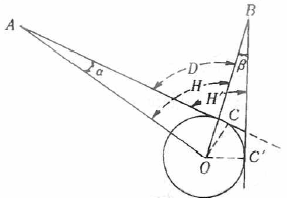
- 79°55′44″
- 80°⑤′16″
- 80°11′⑤″
- 80°15′25″
(정답률: 33%)
24. 하천측량에서 유속관측에 관한 설명으로 옳지 않은 것은?
- 유속관측은 유속계와 같은 기계관측과 부자(浮子)에 의한 관측 등이 있다.
- 같은 단면 내에서는 수심이나 위치에 상관없이 유속의 분포는 일정하다.
- 유속계의 방법은 주로 평수위시가 좋고 부자의 방법은 홍수시에 많이 이용된다.
- 일반적으로 하천이나 수로의 유속은 기울기, 크기, 수량, 유로의 형태, 풍향 등에 따라 변한다.
(정답률: 62%)
25. 해저지질구조해석을 위한 음파탐사의 기록정확도에 기인하는 잡음(noise)의 종류가 아닌 것은?
- 송파기의 잡음
- 전기적 잡음
- 수파기의 잡음
- 선체의 잡음
(정답률: 44%)
26. 노선의 종단면도에 계획선을 계획할 때 고려사항에 대한 설명으로 옳지 않은 것은?
- 계획경사는 요구에 맞도록 설치한다.
- 절토는 성토와 대략 같게 되도록 한다.
- 경사와 곡선은 가능한 병설하도록 한다.
- 절토는 성토로 유용할 수 있도록 운반거리를 고려한다.
(정답률: 76%)
27. 다음 중 노선측량에서 구조물의 장소에 대해서 지형도와 종단면도를 작성하는 측량은?
- 세부측량
- 조사측량
- 설계측량
- 공사측량
(정답률: 55%)
28. 완화곡선의 성질에 대한 설명으로 옳은 것은?
- 시점에 있는 캔트는 원곡선의 캔트와 같다.
- 완화곡선은 직선부와 직선부 사이에 설치하는 완충곡선이다.
- 곡선반지름은 완화곡선의 시점과 종점에서 무한대에 접근한다.
- 완화곡선의 접선은 시점에서는 직선, 종점에서는 원호에 접한다.
(정답률: 50%)
29. 하천의 양수표 설치장소로 적당하지 않은 곳은?
- 하상과 하안이 안전하고 세굴과 퇴적이 생기지 않는 곳
- 상하류 약 100m 정도가 직선인 곳
- 지천과 합류하는 곳
- 수위가 교각 및 그 밖의 구조물로 인하여 양향을 받지 않는 곳
(정답률: 75%)
30. 하천측량 시 평면측량에서 유제부(뚝이 있는 제방)의 측량 범위로 옳은 것은?
- 홍수가 영향을 주는 구역보다 약간 넓게 측량한다.
- 제외지의 전부와 제내지의 300m 이내까지 측량한다.
- 홍수 시에 물이 흐르는 맨 옆에서 약 100m 까지 측량한다.
- 하구에서부터 상류의 홍수피해가 미치는 지점까지 측량한다.
(정답률: 60%)
31. 하천의 유속측정에서 수면으로부터 0.2h, 0.6h, 0.8h 깊이의 유속(m/s)이 각각 0.562, 0.497, 0.364 이었다. 계산된 평균유속이 0.463m/s 이었다면 계산방법은? (단, h : 하천의 수심)
- 1점법
- 2점법
- 3점법
- 4점법
(정답률: 55%)
32. 터널 입구를 연결하는 다각측량을 실시하여 A(50m, 80m), B(-100m, -200m)를 얻었다. AB측선의 방위각은?
- 40°25′12″
- 61°49′17″
- 170°20′08″
- 241°49′17″
(정답률: 52%)
33. 곡선반지름이 200m인 원곡선을 설치하고자 한다. 도로의 시점에서 교점까지의 거리는 324.5m이며 교점부근에 장애물이 있어 그림과 같이 점 A, B에서의 각을 관측하였을 때, 도로시점으로부터 원곡선시점까지의 거리는?
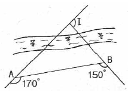
- 184.3m
- 251.7m
- 157.9m
- 286.4m
(정답률: 61%)
34. 그림과 같은 구릉지에서 간격 5m의 등고선에 쌓인 부분의 단면적이 A1=4000m2, A2=2000m2, A3=1800m2, A4=900m2, A5=300m2라고 할 때 각주공식에 의한 이 구릉지의 토량은? (단, 정상은 편평한 것으로 가정한다.)
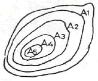
- 30000m3
- 32500m3
- 35000m3
- 36500m3
(정답률: 60%)
35. 다음 중 도면이 곡선으로 둘러싸인 면적을 계산하는데 적당한 방법은?
- 삼변법
- 좌표법
- 구적기법
- 삼사법에 의한 방법
(정답률: 63%)
36. 다음 중 지하매설물의 측량방법에 해당되지 않는 것은?
- 전자 유도 측량
- 지중레이더 측량
- 음파 측량
- 관성 측량
(정답률: 60%)
37. 노선의 기점에서 교점까지의 거리가 136.895km이고 교점에서 곡선시점까지의 거리가 173m이며 곡선길이가 337m이다. 중심말뚝을 20m 간격으로 설치할 때, 단곡선의 시단현과 종단현의 길이는?
- 시단현 15m, 종단현 13m
- 시단현 13m, 종단현 15m
- 시단현 18m, 종단현 19m
- 시단현 19m, 종단현 18m
(정답률: 55%)
38. 클로소이드의 매개변수 A=150m, 곡선 반지름 R=250m일 때, 곡선 길이는?
- 60m
- 70m
- 80m
- 90m
(정답률: 59%)
39. 해양에서 수심측량을 할 경우 높이 측정의 기준으로 사용하기 위하여 조석관측을 기초로 정한 국가기준점은?
- 기본수준점
- 영해기준점
- 중력점
- 위성기준점
(정답률: 72%)
40. 그림의 면적을 심프슨 제2법칙을 이용하여 구한 값은? (단, 지거의 간격은 5m로 일정하다)
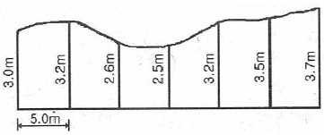
- 92.25m2
- 93.25m2
- 94.25m2
- 95.25m2
(정답률: 49%)
3과목: 사진측량 및 원격탐사
41. 회전주기가 일정한 위성을 이용한 원격탐사(remote sensing)의 특징으로 옳지 않은 것은?
- 짧은 기간 내에 넓은 지역을 동시에 관측할 수 있으며 반복관측이 가능하다.
- 회전주기가 일정하므로 원하는 지점 및 시기에 관측이 용이하다.
- 관측이 좁은 시야각으로 얻어진 영상은 정사투영에 가깝다.
- 탐사된 자료가 즉시 이용될 수 있으며 재해, 환경문제 해결에 편리하다.
(정답률: 60%)
42. 사진측량에 대한 설명으로 옳지 않은 것은?
- 정량적인 관측은 물론 정성적 해석이 가능하다.
- 사진을 이용하여 임의 지점의 평면위치와 높이를 동시에 측정할 수 있다.
- 지상에서 촬영한 사진은 사용할 수 없다.
- 소규모 범위의 측량에는 비경제적이다.
(정답률: 75%)
43. 촬영고도가 800m, 초점거리가 153mm, 중복도가 65.2%로 연직 쵤영된 한 쌍의 항공 사진이 있다, 대상물의 높이차가 1m일 때 발생되는 사진에서의 시차차는? (단, 사진의 크기는 23cm × 23cm 이다.)
- 0.01mm
- 0.02mm
- 0.1mm
- 0.2mm
(정답률: 48%)
44. 사진지표가 없는 일반 사진기로 쵤영된 사진에 대하여 해석적 사진측량을 수행할 경우 정밀좌표측정기의 기계좌표와 지상좌표 간의 변환식으로 가장 적합한 것은?
- 투영 변환식
- 직접선형 변환식
- 부등각사상 변환식
- 선형등각사상 변환식
(정답률: 39%)
45. 평탄한 지면을 초점거리 150mm, 사진크기 23cm×23cm로 촬영한 연직항공사진이 있다. 촬영고도 1800m, 종중복도 60%로 촬영한 경우, 연속된 10매의 사진에서 입체시 가능한 부분의 실제면적은?
- 27.5km2
- 28.9km2
- 30.5km2
- 45.7km2
(정답률: 14%)
46. 항공사진측량에 대한 설명 중 옳지 않은 것은?
- 스트립이 2개 이상이면 복 스트립이라 한다.
- 블록은 스트립이 횡방향으로 접합된 형태이다.
- 스트립은 항공사진을 촬영 진행방향으로 연속하여 접합된 형태이다.
- 블록이 3개 이상인 것을 스트립이라 한다.
(정답률: 64%)
47. 비행고도 3000m에서 수직으로 촬영된 사진에서 표고 120m인 지점이 주점으로부터 5cm 되는 곳에 위치하여 있다면 고저차에 의한 상(像)의 편위량은?
- 1mm
- 2mm
- 3mm
- 4mm
(정답률: 59%)
48. 사진측량에서 표정에 관한 설명 중 옳은 것은?
- 회전요소만을 사용하여 상호표정을 수행할 수도 있다.
- 상호표정에서 모델 내에 적절히 배치된 4점에 종시차가 없으면 종시차는 모두 소거되었다고 할 수 있다.
- 절대표정은 6개의 변환요소를 결정하는 과정이다.
- 표정단계 중 절대표정은 지상기준점을 필요로 하지 않는다.
(정답률: 25%)
49. 항공라이다의 특성에 대한 설명으로 옳지 않은 것은?
- GNSS, INS, Laser Scanner로 구성된다.
- 레이저펄스가 반사된 지점의 반사강도 및 파형을 제공한다.
- 송전선의 3차원 위치 모델 생성을 가능하게 한다.
- 극초단파를 발사한 후 반사되어 돌아오는 시간을 관측하여 3차원 DEM을 구축한다.
(정답률: 44%)
50. 카메라의 검정 데이터(calibration data)에 해당되는 것은?
- 사진지표의 좌표값
- 연직점의 좌표
- 대기 보정량
- 사진축척
(정답률: 58%)
51. 다중 해상도 수치표고모형(DEM) 생성이 가능한 표고점 추출 방법은?
- 격자 표고점 추출
- 무작위 표고점 추출
- 동적 표고점 추출g
- 점진적 표고점 추출
(정답률: 50%)
52. 가시광 분광반사도와 근적외 분광반사도에 의하여 정규식생지수(NDVI : normalized difference vegetation index)를 구하는 식은?
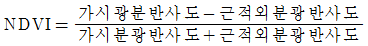
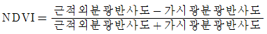
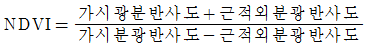
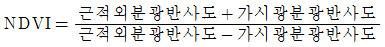
(정답률: 61%)
53. 대공표지에 대한 설명으로 옳지 않은 것은?
- 대공표지의 상공은 45°이상의 각도로 열어 두어야 한다.
- 대공표지에 쓰이는 재료는 합판, 알루미늄, 합성수지, 직물 등이 사용된다.
- 그 위치가 촬영 후에 확인되는 다른점으로부터 쉽게 편심 관측되는 점은 생략 가능하다.
- 주위가 녹색이나 검을 경우는 회백색의 광택색이어야 한다.
(정답률: 52%)
54. 축척 1:10000 으로 촬영한 연직사진에 대하여 촬영에 사용한 사진기의 초점거리 153mm, 사진크기 23cm×23cm, 종중복도 70%일 때의 기선 고도비는?
- 0.45
- 0.85
- 1.40
- 2.85
(정답률: 54%)
55. 항공사진 측량에 의한 지형도 제작 시 필수적인 공정이 아닌 것은?
- 기준점 측량
- 사진촬영
- 세부도화
- 지자기 측량
(정답률: 68%)
56. 원경탐사 센서의 분류 중에 수동방식의 센서가 아닌 것은?
- Radar
- MSS
- Camera
- Hyper spectral
(정답률: 64%)
57. 표정점 선점에 관한 설명으로 옳지 않은 것은?
- 굴뚝과 같이 지표면보다 뚜렷하게 높은 곳에 있는 점이어야 한다.
- 상공에서 명확히 보여야 한다.
- 가상점, 가상상을 사용하지 않도록 한다.
- 표정점은 X, Y, Z 가 동시에 정확하게 결정될 수 있는 점이 이상적이다.
(정답률: 59%)
58. 다음 중 원격탐사와 가장 거리가 먼 것은?
- LANDSAT
- HRV
- VRS
- SPOT
(정답률: 51%)
59. 아래와 같이 영상을 분석하기 위해 산림지역의 트레이닝 필드를 선정하였다. 트레이닝필드로부터 취득되는 각 밴드의 통계값으로 옳은 것은?
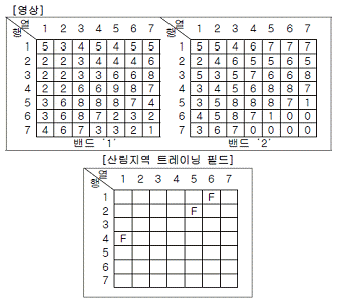
- 밴드 '1'의 화소값 : 최소값=1, 최대값=5, 밴드 '2'의 화소값 : 최소값=3, 최대값=7
- 밴드 '1'의 화소값 : 최소값=2, 최대값=5, 밴드 '2'의 화소값 : 최소값=2, 최대값=7
- 밴드 '1'의 화소값 : 최소값=2, 최대값=5, 밴드 '2'의 화소값 : 최소값=3, 최대값=7
- 밴드 '1'의 화소값 : 최소값=3, 최대값=5, 밴드 '2'의 화소값 : 최소값=3, 최대값=5
(정답률: 63%)
60. 사진측량에서 모델(model)에 대한 설명으로 옳은 것은?
- 한 장의 사진을 의미한다.
- 편위수정된 사진을 의미한다.
- 어느 지역을 대표할 만한 사진을 의미한다.
- 한 쌍의 중복된 사진으로 입체시 되는 부분을 의미한다.
(정답률: 66%)
4과목: 지리정보시스템
61. 다음 두 테이블을 join한 결과로 옳은 것은?
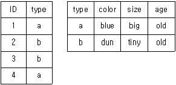
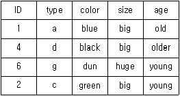
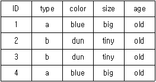
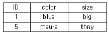
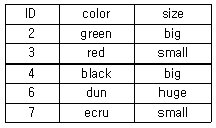
(정답률: 61%)
62. 지리정보데이터 파일 형식(format) 중 나머지 파일 형식과 성격이 다른 하나는?
- Shape 포맷
- GIF 포맷
- TIFF 포맷
- JPEG 포맷
(정답률: 50%)
63. 인터넷을 기반으로 모든 사물을 연결하여 사람과 사물, 사물과 사물 간의 정보를 상호 소통하는 지능형 기술 및 서비스는?
- web GIS
- mobile internet
- IoT(Internet of Things)
- UIS(Urban Information System)
(정답률: 67%)
64. 지리정보시스템(GIS) 자료를 공간자료와 속성자료로 구분할 때 공간자료에 해당되는 것은?
- 관거 재질
- 관거 매설 년도
- 관거 관리 이력
- 관거 위치
(정답률: 58%)
65. 그림에서 [A]와 [B]를 이용한 래스터 계산결과인 [C]를 위한 논리연산자로 옳은 것은?
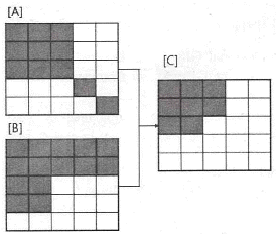
- A or B
- A xor B
- A not B
- A and B
(정답률: 64%)
66. 지리정보시스템(GIS)의 공간분석에서 선형의 공간객체 특성을 이용한 네트위크(Network)분석 기능과 거리가 먼 것은?
- 수계에서의 공해물질 추적
- 하나의 지점에서 다른 지점으로 이동시 최적 경로의 선정
- 창고나 보급소, 경찰서, 소방서와 같은 주요 시설물의 위치 선정
- 특정 주거지역의 면적 산정과 인구 파악을 통한 인구 밀도의 계산
(정답률: 58%)
67. 건축, 전기, 설비, 통신 등 도면 자동화를 통해 구축된 수치지도를 바탕으로 지상 및 지하의 각종 시설물을 시스템 상에 구축하여 지원하는 시스템은?
- AM(Automated Mapping)
- TIS(Transportation Information System)
- FM(Facility Management)
- KML(Keyhole Markup Language)
(정답률: 64%)
68. 위상관계(Topology)를 설명하는 보기의 그림 중 특성이 다른 것은?
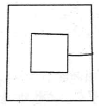
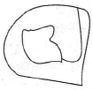
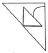
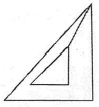
(정답률: 56%)
69. 지리정보시스템(GIS)에 활용되는 데이터 구조 중 코드화하기 쉬우며 열과 행으로 저장되는 데이터 구조는?
- 외부 데이터
- 래스터 데이터
- 내부 데이터
- 벡터 데이터
(정답률: 70%)
70. 수치표고모형(DEM)으로부터 얻을 수 있는 자료로 거리가 먼 것은?
- 경사도
- 교통량 분포
- 향(aspect) 계산
- 등고선
(정답률: 65%)
71. 메타데이터에 대한 설명 중 옳지 않은 것은?
- 공간자료 호환을 위한 표준 포맷을 의미한다.
- 데이터에 대한 특성과 내용을 설명한다.
- 데이터의 검색을 위한 참조자료로 이용된다.
- GIS 자료의 원활한 공급과 활용을 위해 필요하다.
(정답률: 54%)
72. 다음 중 데이터베이스의 발전단계를 순서대로 열거한 것은?
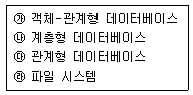
- ㉱→㉯→㉰→㉮
- ㉱→㉰→㉯→㉮
- ㉱→㉰→㉮→㉯
- ㉯→㉰→㉮→㉱
(정답률: 50%)
73. 다음 중 지리정보시스템(GIS)의 주요 기능이 아닌 것은?
- 자료처리
- 자료출력
- 자료복원
- 자료관리
(정답률: 67%)
74. 공간정보 데이터는 객체들의 위치뿐만 아니라 객체상호간의 상호인접성, 연결성, 근접성 등 간적 상호관계에 대한 정보도 함께 정의 되는 과정은?
- 객체설정
- 공간설정
- 위상설정
- 참조설정
(정답률: 64%)
75. 수치지도 제작・편집과정에 대한 설명으로 틀린 것은?
- 정위치 편집은 지리조사 및 현지 보완측량 결과를 입력하여 해석도화 자료를 수정・보완하는 작업이다
- 해석도화는 사진 상에 나타난 지형의 표면을 일정한 축척으로 수치지도화 하는 작업이다.
- 도면제작편집은 지도형식의 도면으로 출력하기 위하여 표준도식에 의하여 편집하는 작업이다.
- 구조화 편집은 정위치 편집된 지형에 대해 3차원 형태로 시각화하는 작업이다.
(정답률: 56%)
76. 지리정보시스템(GIS)의 자료구조 중 벡터형 자료구조의 특징으로 틀린 것은?
- 복잡한 현실세계의 묘사가 가능하다.
- 도형정보의 정확도가 높다.
- 도형정보와 관련된 속성정보의 추출 및 일반화, 갱신 등이 용이하다.
- 자료구조가 비교적 단순하다.
(정답률: 64%)
77. 아래의 표고점 자료로부터 PXY(160, 150) 지점의 표고(z)는? (단, 평면(z=ax+by+c)으로 보간(interpolation))
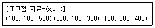
- 380
- 400
- 420
- 440
(정답률: 38%)
78. 다음의 도형 정보 중 공간사상이 다른 것은?
- 절대 표고를 표시한 점
- 소방차의 출동 경로
- 전력선로
- 도로의 중심선
(정답률: 64%)
79. 조직 내 많은 부서가 공동으로 필요로 하는 다양한 지리정보를 손쉽게 취급할 수 있도록 클라이언트-서버 기술을 바탕으로 시스템을 통합시키는 GIS 기술을 무엇이라 하는가?
- Professional GIS
- Internet GIS
- Component GIS
- Enterprise GIS
(정답률: 62%)
80. 폴리곤 레이어를 대상으로 전체 범위 중 공통 지역의 도형과 속성을 추출하는 중첩분석 기능은?
- Intersection
- Difference
- Identity
- Merge
(정답률: 64%)
5과목: 측량학
81. 등고선의 성질에 대한 설명으로 옳지 않은 것은?
- 등고선은 도면 내외에서 폐합하는 곡선이다.
- 등고선은 최대경사방향과 직각으로 교차한다.
- 등고선은 경사가 급한 곳에서는 간격이 좁고, 완만한 경사에서는 넓다.
- 높이가 다른 두 등고선은 어떠한 경우에도 서로 교차하지 않는다.
(정답률: 63%)
82. 그림과 같은 편심관측에서 S1=3km, S2=2km, e=0.2m, Ø=120°, T=60°일 때, T′는?
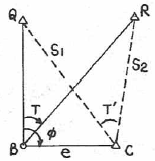
- 59°59′54″
- 60°00′00″
- 60°00′06″
- 60°00′12″
(정답률: 41%)
83. 정밀한 수준 측량에서 수준 표척의 전・후 거리를 되도록 같게 하는 이유와 거리가 먼 것은?
- 지구의 곡률로 인한 오차를 소거한다.
- 광선의 굴절로 인한 오차를 소거한다.
- 기계의 조정불량에 의한 오차를 소거한다.
- 과대오차를 소거하여 계산을 용이하게 하기 위해서이다.
(정답률: 43%)
84. 삼각측량에 의한 관측 결과가 그림과 같을 때, C점의 좌표는? (단, AB의 거리=10m, 좌표의 단위 : m)
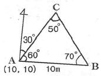
- (6.13, 10.62)
- (10.62, 6.13)
- (16.13, 20.62)
- (20.62, 16.13)
(정답률: 44%)
85. 그림에서 교각 ∠A, ∠B, ∠C, ∠D의 크기가 다음과 같을 때 cd측선의 방위각은?
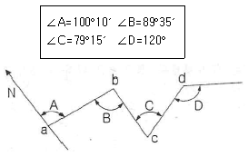
- 00°10′
- 180°10′
- 89°50′
- 269°50′
(정답률: 48%)
86. 30m 줄자로 어떤 거리를 관측하였더니 300m이었다. 이때 줄자가 표준길이보다 1.5cm가 짧은 것이었다면 관측거리의 정확한 값은?
- 299.85m
- 299.98m
- 300.15m
- 301.⑤m
(정답률: 53%)
87. 트래버스 측량에서 폐합오차를 분배하는 컴퍼스 법칙과 트랜싯 법칙에 대한 설명으로 옳지 않은 것은?
- 컴퍼스 법칙은 거리의 정도와 각 관측의 정밀도가 거의 같을 경우에 사용된다.
- 컴퍼스 법칙은 각 측선의 길이에 비례하여 배분하는 방법이다.
- 트랜싯 법칙은 위거와 경거의 크기에 비례하여 폐합오차를 배분하는 방법이다.
- 트랜싯 법칙은 거리 측량의 정밀도가 각측량의 정밀도보다 좋을 경우에 이용된다.
(정답률: 46%)
88. 레벨을 조정하기 위하여 그림과 같이 설치하여 BC=CD=50m, AB=10m일 때 B에서의 관측값이 b1=1.262m, b2=1.726m, D에서의 관측값이 d1=1.745m, d2=2.245m일 때 조정량은?
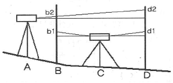
- 0.0001rad
- 0.0004rad
- 0.0007rad
- 0.0009rad
(정답률: 43%)
89. 수평각관측 방법에 대한 설명으로 옳지 않은 것은?
- 단각법은 하나의 각을 1번 관측하는 것으로 시준오차와 읽기오차가 발생된다.
- 배각법은 방향각법에 비해 읽기오차가 크다.
- 조합각 관측법(각관측법)은 수평각 관측법 중 가장 정확한 값을 얻을 수 있다.
- 방향각법은 한 측점 주위의 각이 많을 경우 이용하는 방법이다.
(정답률: 38%)
90. 지형도 작성에서 지표면이 낮거나 움푹 팬 지점을 연결한 선으로 합수선이라고도 하는 것은?
- 최대경사선
- 철선(능선)
- 요선(계곡선)
- 경사변환선
(정답률: 55%)
91. 최소제곱법에 관한 설명으로 틀린 것은?
- 관측방정식으로 구한 최확값이 조건방정식으로 구한 것에 비해 정확하다.
- 관측방정식의 수는 관측횟수와 같다,
- 조건방정식의 수는 잉여관측횟수(자유도)와 같다.
- 잔차의 제곱의 합이 최소가 되도록 최확값을 정하는 조정법이다.
(정답률: 43%)
92. 축척 1:25000의 지형도에서 963m의 산 정상으로부터 423m의 산 밑까지 거리가 95mm이었다면 사면의 경사는?
- 1/7.4
- 1/6.4
- 1/5.4
- 1/4.4
(정답률: 45%)
93. 그림과 같은 수준측량 결과에 따른 B점의 지반고는? (단, A점의 지반고는 30m이다.)
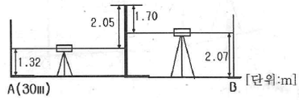
- 28.90m
- 29.60m
- 33.74m
- 37.14m
(정답률: 53%)
94. 1회 관측에서 ±4mm의 우연오차가 발생하였다면 4회 관측하였을 때의 우연오차는?
- ±2.0mm
- ±3.0mm
- ±4.0mm
- ±8.0mm
(정답률: 52%)
95. 국가공간정보 기본법에 따라 "공간정보를 효율적으로 관리 및 활용하기 위하여 자연적 또는 인공적 객체에 부여하는 공간정보의 유일식별번호" 로 정의되는 것은?
- 유일정보번호
- 객체고유등록번호
- 공간객체등록번호
- 객체관리번호
(정답률: 51%)
96. 세계측지계로의 지도제작 시 사용되는 직각좌표계 투영원점 가산수치로 옳은 것은?
- X(N): 600,000m, Y(E): 200,000m
- X(N): 500,000m, Y(E): 200,000m
- X(N): 600,000m, Y(E): 100,000m
- X(N): 500,000m, Y(E): 100,000m
(정답률: 60%)
97. 공공측량시행자는 공공측량 작업계획서를 작업시행 며칠 전까지 제출하여야 하는가?
- 3일
- 7일
- 15일
- 30일
(정답률: 57%)
98. 「측량기준점표지를 이전 또는 파손하거나 그 효용을 해치는 행위를 한 자」에 대한 벌칙 기준은?
- 1년 이하의 징역 또는 1천만원 이하의 벌금
- 2년 이하의 징역 또는 2천만원 이하의 벌금
- 3년 이하의 징역 또는 3천만원 이하의 벌금
- 300만원 이하의 과태료
(정답률: 47%)
99. 일반측량을 실시할 때 기초로 할 수 없는 것은?
- 기본측량성과
- 일반측량성과
- 공공측량성과
- 공공측량기록
(정답률: 50%)
100. 다음 중 용어에 대한 정의로 옳지 않은 것은?
- 기본측량이란 국토개발을 위한 기초 자료가 되는 공간정보를 제공하기 위하여 대통령이 실시하는 측량을 말한다.
- 공공측량이란 국가, 지방자치단체, 그 밖에 대통령령으로 정하는 기관이 관계 법령에 따른 사업 등을 시행하기 위하여 기본측량을 기초로 실시하는 측량을 말한다.
- 지적측량이란 토지를 지적공부에 등록하거나 지적공부에 등록된 경계점을 지상에 복원하기위해 시행하는 측량을 말한다.
- 수로측량이란 해양의 수심・지구자기・중력・지형・지질의 측량과 해안선 및 이에 딸린 토지의 측량을 말한다.
(정답률: 54%)